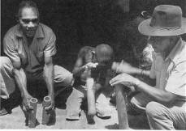

Quitiplás: Duendes del Río
Trapos
y Helechos
17 (5-2000): 36-37
Una investigación etnomusicológica de campo se enciende de una magia especial. En Barlovento, estado Miranda, visitamos al cultor de Tacarigua-Mamporal Orlando Machado y su grupo Fundabarlovento, para observar a un instrumento musical juguetón, el Quitiplás, en compañía del fallecido musicólogo de América Latina, el Dr. Francisco Curt Lange, in memoriam.
— Río arriba hay otros pozos, pero éste se lo escogimos al Doctor. — Me confesó Orlando Machado, promotor de la cultura del pueblo de Tacarigua en Barlovento, al pasarme otra cervecita para celebrar el final de la caminata y recoger el aliento.
Una luz pincelada alumbraba el pozo tiernamente, con hojas ovaladas, largas y piedras redondas. El susurro contínuo del agua que corre sin detenerse, no llegó a opacar los gritos con risas, cuando casi se cae la olla con todo el sancocho, por un resbalón de chola mojada sobre una piedra necia. El pozo no era muy profundo ya que se veía el fondo clarito con la corriente revoloteando en carreritas por todas las rocas.
—Venezuela es muy privilegiada,— apuntó el Doctor Lange. —Este pozo es un paraíso. En todas mis andanzas por Latinoamérica nunca había visto algo de igual belleza y esplendor.—
—¡Orlando!— me dirigí al eterno amigo, quitándome la camisa para echarme el primer bañito frío en el yacuzzi natural y agregué: —Como que el Doctor está inspirado a pesar de sus ochenta y pico de años, un by-pass y un marcapasos.—
—Guáramo es lo que
tiene para atreverse a
venir
tan lejos contigo y ese poco de cámaras, grabadoras y videos.—
Me
respondió Orlando ya sumergido en el pozo y disfrutando
añadió:
—Hace calor, pero con todo y sus años, el
recorrido
y las cervezas, el Doctor mantiene una cabeza bien clarita.—
Mirando hacia arriba
asombrado por el techo de
catedral
que formaba el bosque de bambú rodeando el pozo y la luz
entrecruzada
que producía, le respondí justificando:
—Invité a Curt Lange a esta
investigación
porque desde que llegó a Venezuela del Uruguay no ha salido a la
playa ni una sola vez, y le prometí que iba a presenciar una
perla
desconocida por mucha gente: ¡Los Quitiplás!—
En la roca de enfrente, como si en otro planeta cercano, unos muchachos en cuclillas sacaban de una bolsa de plástico de automercado cinco tubos de bambú de casi medio metro de largo el más grande, otros dos un poco más cortos y un par de pequeños, ambos casi de igual tamaño. Estos dos tubos empezaron a sonar en manos de un muchacho, al golpearlos sucesivamente contra la roca por su extremo cerrado del nudo del bambú, y al entrechocar ambos tubos produciendo un chasquido agudo. El sonido resultante tenía un estrecho parecido a la palabra "qui-ti-plás", al cual se le agregaron progresivamente los otros tubos más largos, cada uno tocado por un muchacho.
El tubo más grande entró en acción de último, y al igual que los otros dos tubos individuales, se tocaba con una mano golpeandolo contra la roca por su lado cerrado y la otra mano abriendo o tapando la abertura superior del tubo. De esta manera se producían sonidos de diferentes timbres y alturas en cada tubo y el tejido de sonidos rítmicos resultante parecía una lluvia de marimbas, bailante y juguetona, encendida en el río como cualquier chubasco repentino.
—Si no me hubieran dicho nada, ya que estoy muy mal de la vista, apostaría a que era una batería de Mbiras o Sanzas, pianos de mano de lengüetas de metal como los de los Shona en Zimbabwe, Africa,— acertó el Dr. Lange, — pero parece una cajita de música gigante porque el ritmo se repite en ciclos largos. Muy interesante . . . ¡qué fría está el agua de este río!—
Dejamos atrás la cortina de la corriente con su rumor incensante para adentrarnos en el camino de regreso, ya comenzado el crepúsculo, y nos entregamos de nuevo al miedo de pisar una culebra o una araña gigantesca. A pesar del alboroto que pájaros e insectos derramaban con el atardecer incipiente, todavía se escuchaban los muchachos río arriba, lejanos como un murmullo de la misma corriente, indetenible y constante, un duende del agua.
—Si los muchachos aprenden bien a tocar los Quitiplás, se nos facilita la enseñanza de los tambores Redondos, ya que casi son los mismos ritmos.— Aclaró Orlando, tan negro que casi no lo podía ver en la sombra nocturna. Sin parar de caminar, avanzando cada vez más de prisa porque la noche se nos cayó encima, Orlando mantenía la conversación para servir de acompañamiento al paso en la oscuridad, haciendo el esfuerzo de no parar de hablar.
—Max Brandt, un norteamericano que hizo su tesis de doctorado sobre la música de Barlovento y aprendió a tocar todos los tambores en los años setenta,— respondí siguiéndole su paso, pie a pie, — menciona en su libro que los informantes que entrevistó le decían que el canto, toque y danza del Quitiplás son similares a los tambores redondos, menos en el pueblo de Curiepe.—
—Sí, en Curiepe las cosas son siempre un poco diferentes porque han estado inundados por los caraqueños en todas sus fiestas.— Afirmó Orlando aguantando una rama espinoza que se atravesaba en el camino, y al pasar la fila se colocó en el último puesto, de donde seguía explicando:
—Los Toques y
Tonadas de Quitiplás
están
asociados a las Fiestas de San Juán Bautista en junio como lo
están
también los conjuntos de tambores Redondos y Mina. Los
Quitiplás
no están restringidos a estas fiestas solamente: Se utilizan
también
para que los muchachos aprendan el toque de Redondos, sirvan de
juguete
y pasatiempo a los niños y cuando en las fiestas se cansan los
tamboreros,
los Quitiplás tocan un rato mientras ellos se refrescan.—
—Decía Max Brandt,— agregué, —que los
Quitiplás
es el conjunto menos utilizado en Barlovento, ya que sólo lo
encontró
en tres comunidades, incluyendo a Tacarigua.—
—Según mi gente, los
Quitiplás se
tocaban,
cantaban y bailaban en todo Barlovento, pero cayeron poco a poco
en
desuso.
Ultimamente se han reactivado y por lo menos en Tacarigua están
vivitos.— El orgullo de Orlando por su pueblo dejó brillar una
sonrisa
destellante en su blanca dentadura, y prosiguió:
—Se agrupan usualmente en tres o cuatro tocadores
de
Quitiplás, pero se puede duplicar cualquier tubo con más
muchachos. Uno toca los pares pequeños, llamados
Quitiplás,
y los otros tocan los tubos individuales, la Prima o Hembra y el
Pujao
o Macho, que es el más grande y el que suena más grave.
En
Tacarigua usamos un tubo individual adicional al que le llamamos
el
Cruzao.
Fíjense que los nombres de los tubos son iguales a los nombres
de
los tambores Redondos: Prima, Cruzao y Pujao, por lo menos aquí
en Tacarigua. Los nombres los cambian en todas partes y eso es
muy
común,
como para la comida y los insultos.—
El camino estaba completamente oscuro. Ya no se oía ni el río ni los muchachos tocando, pero no había silencio. Grillos, sapos, pájaros, todo sonaba alrededor de nosotros, haciéndonos sentir cada vez más pequeños, distintos a la naturaleza abundante. Solo había una mirada silenciosa, directa, de un cielo repleto de estrellas mudas y asomadas.
—El tubo más difícil de tocar es el Pujao o Macho porque tiene que improvizar,—gritaba Orlando para que lo oyéramos desde su posición trasera en la cola y para que apuráramos el paso.
—Mientras que el par de Quitiplás, la Prima y el Cruzao mantienen el ritmo parejito, el Pujao tiene que "florear" y cantar frases largas, a pesar de ser el más grave, y se le tiene que dar bien duro.—
—¿Y no se rompen los tubos?— Al fin habló el Dr. Lange, un poco sin aliento.
Orlando, contento de que una eminencia como el doctor en materia musicológica le estuviera oyendo detalladamente, le confesó:
—Para que no se
piquen o rajen con tanto golpeteo,
hay
que cortarlos en luna menguante. La afinación del sonido que
sale
del tubo al golpearlo depende del tamaño del bambú.
Mientras
más largo o ancho, más grave el tono. Los grupos de
percusión
de Tacarigua los afinan con mucho cuidado, cortándolos en
diferentes
tamaños y probándolos hasta que suenen bien en grupo. Se
tocan contra el suelo de tierra dura, contra un ladrillo, piedra
o
cemento
de la carretera, y eventualmente algunos se terminan rajando.—

—Yo les puse una cubierta de silicón, el que se usa para los carros, en el borde inferior del bambú.— Interrumpí para comunicarle un secreto tecnológico de mi invención. —Me funcionó muy bien, porque además rebotan solos.—
—Ya salió Emilio con sus inventos.— Me cortó Orlando, reprochándome el aporte. —También los utilizastes en dos de tus composiciones nuevas, ¿no es así?—
—Orlando, vamos a parar un rato porque andamos muy rápido y el profesor se me está cansando.— Supliqué. —Casi se cae dos veces tropezándose con unas raíces del camino.—
—Además, tengo que detenerme a cumplir con una necesidad imperante.— Añadió Curt Lange, ya en proceso de satisfacer su apuro.
Orlando, al comando
de la expedición
nocturna,
consideró en voz alta:
—No deberíamos estacionarnos porque nos puede
salir el ánima de "La Llorona." Pero en todo caso, es una
emergencia.—
Como nos sorprendió un deseo común, el convoy entero se hizo a los lados del sendero, cada quien buscando en la oscuridad su respectiva matica. Alzando la mirada en reflexión momentánea, me sorprendió la espuma de estrellas que nos vigilaba.
—Profesor, ojalá se pueda operar las cataratas pronto para que vea la maravilla de este cielo estrellado, profundo y brillante.—
—No te preocupes, Emilio,— agregó el Dr. Lange, extendiendo su brazo para palmearme cariñosamente al hombro, —conozco muchos cielos de este gran continente, todos llenos de estrellas así tan luminosas como las de éste que me acabas de traer a presenciar, gracias a tu amigo Orlando y sus Quitiplás.—
Aretz, Isabel. Instrumentos Musicales de Venezuela. Cumaná: Universidad de Oriente, 1967.
Brandt, Max Hans. Estudio Etnomusicológico de Tres Conjuntos de Tambores Afro-Venezolanos de Barlovento. Caracas: CCPYT, 1987.
Fundación Bigott. MIRANDA. Caracas: Fundación Bigott, 1996.
Girón, Israel y María Teresa Melfi. Instrumentos Musicales de América Latina y el Caribe. Caracas: CONAC, CCPYT, OEA, 1988.
_________. Folklore y Curriculum, Vol. 2. Caracas: FUNDARTE, INIDEF, CONAC, OEA, 1983. S.v. "Música Folklórica".
Hernández, Daría y Cecilia Fuentes. Instrumentos musicales de Venezuela. Caracas: Museo Nacional de Folklore, CONAC, s/f.
INAF. Musica Popular Tradicional de Venezuela.
Disco Long Play. Notas de la cubierta. Caracas: INAF, 1983.
Mendoza, Emilio. "Anotaciones de la
investigación
de campo, Tacarigua, Municipio Brión, edo. Miranda," julio,
1987.
Manuscrito. Con los auspicios de la Biblioteca Nacional y
FundaBarlovento.
Olivero, Omar. "Las Bases Rítmicas Afro: Algunos Errores de Apreciación." Anuario - FUNDEF. I (1990): 65 - 66.
Ramón y Rivera, Luis Felipe. La música afrovenezolana. Caracas: Universidad Central de Venezuela, 1971.
Suárez, Carlos. "Particularidades Sonoras del
Quitiplás
Idiófono de Tradición Afrovenezolana." Manuscrito,
Biblioteca
Juán Liscano, FUNDEF, Caracas, 1997.